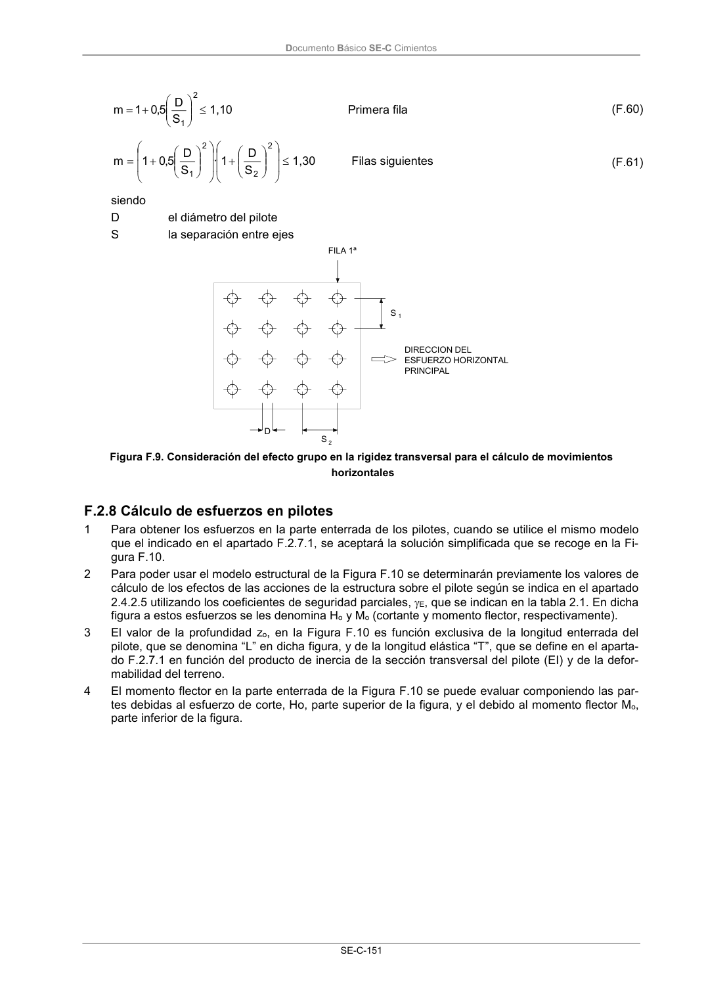
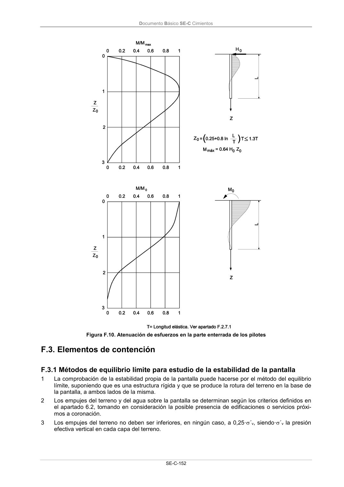

DB-SE-C · F.2.8 Cálculo de esfuerzos en pilotes · versión 2019-12-20 · capa oficial
Formatos: JSON compacto · Markdown · PDF fuente
Ámbito del documento · texto del ámbito · documento y tablas
ID técnico a0265 · PDF pág. 156-157 · jerarquía no validada por persona · contrastado con el literal de la página 156 (candidato tipográfico); no validado por persona · padre: a0258
F.2.8 Cálculo de esfuerzos en pilotes 1 Para obtener los esfuerzos en la parte enterrada de los pilotes, cuando se utilice el mismo modelo que el indicado en el apartado F.2.7.1, se aceptará la solución simplificada que se recoge en la Fi- gura F.10. 2 Para poder usar el modelo estructural de la Figura F.10 se determinarán previamente los valores de cálculo de los efectos de las acciones de la estructura sobre el pilote según se indica en el apartado 2.4.2.5 utilizando los coeficientes de seguridad parciales, E, que se indican en la tabla 2.1. En dicha figura a estos esfuerzos se les denomina Ho y Mo (cortante y momento flector, respectivamente). 3 El valor de la profundidad zo, en la Figura F.10 es función exclusiva de la longitud enterrada del pilote, que se denomina “L” en dicha figura, y de la longitud elástica “T”, que se define en el aparta- do F.2.7.1 en función del producto de inercia de la sección transversal del pilote (EI) y de la defor- mabilidad del terreno. 4 El momento flector en la parte enterrada de la Figura F.10 se puede evaluar componiendo las par- tes debidas al esfuerzo de corte, Ho, parte superior de la figura, y el debido al momento flector Mo, parte inferior de la figura. Documento Básico SE-C Cimientos SE-C-152 Figura F.10. Atenuación de esfuerzos en la parte enterrada de los pilotes


PDF fuente redistribuible: copia fiel enlazada en esta página (SHA256 verificado).